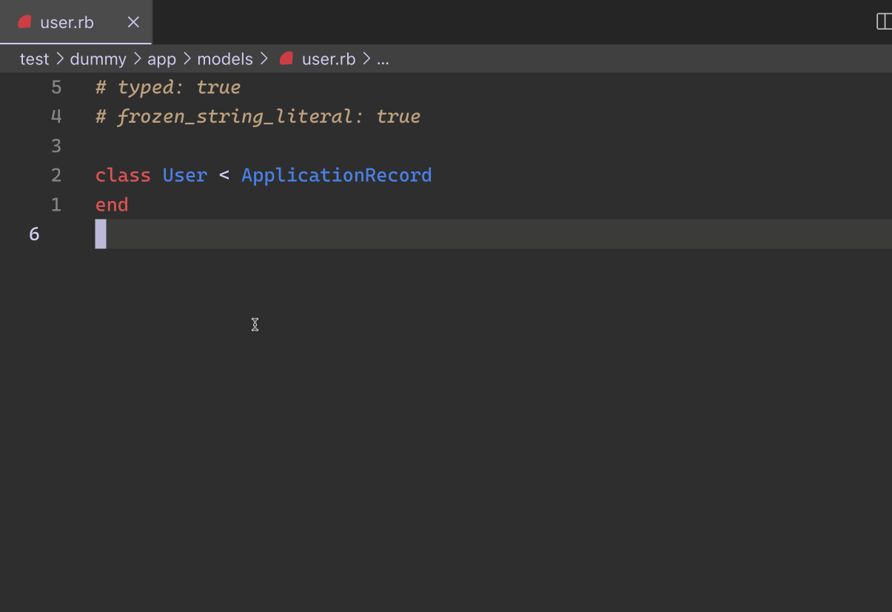
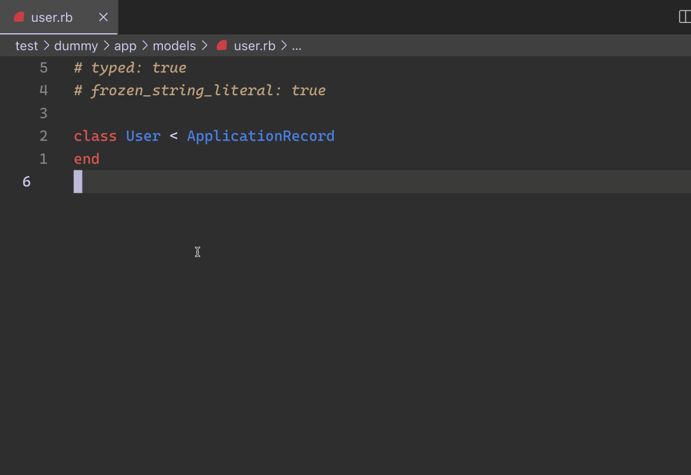

class RubyLsp::Rails::Hover

Augment hover with information about a model.
Example¶ ↑
User.all # ^ hovering here will show information about the User model

Augment hover with information about a model.
User.all # ^ hovering here will show information about the User model